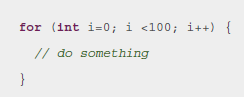

Code Blocks
Code blocks are used to render section of programming code.
How to Enable Code Syntax Highlighting
This topic refers only to the DITA Map PDF - based on HTML5 & CSS transformation type.
You can use syntax highlighting to make it easier to read your code snippets by displaying
each type of code in different colors and fonts. In the DITA topics, set the
@outputclass attribute on the <codeblock> elements to
one of these values:
- language-bourne
- language-c
- language-cpp
- language-csharp
- language-css
- language-ini
- language-java
- language-javascript
- language-json
- language-lua
- language-perl
- language-php
- language-python
- language-ruby
- language-sql
- language-xml
- language-xquery
For example, for a java snippet:
<codeblock outputclass="language-java"> for (int i=0; i <100; i++) { // do something } </codeblock>
The resulting HTML fragment in the merged HTML5 document is:
<pre class="+ topic/pre pr-d/codeblock pre codeblock language-java" xml:space="preserve"> <strong class="hl-keyword" style="color:#7f0055">for</strong> (<strong class="hl-keyword" style="color:#7f0055">int</strong> i=<span class="hl-number">0</span>; i <<span class="hl-number">100</span>; i++) { <em class="hl-comment" style="color:#006400">// do something</em> } </pre>
And in the output, it will be rendered as:
Changing the Colors for the Syntax Highlighting
As you can see in the above example, the HTML elements <span> and
<strong> are used to color the content. Since they have a
@style attribute set, the overriding properties need to be marked with
!important.
Suppose you want to color the keywords in red and the comments in blue. To do so, add the following to your customization CSS:
.hl-keyword {
color: red !important;
}
.hl-comment {
color: blue !important;
}
How to Disable Line Wrapping in Code Blocks
By default, code blocks have the content wrapped to avoid the bleeding of long lines out of the page. To avoid wrapping, add the following in your customization CSS:
*[class~="pr-d/codeblock"] {
white-space: pre;
}
For the DITA Map PDF - based on HTML5 & CSS transformation type, the best solution to distinguish between lines is to leave them wrapped, but color each line with a different background (zebra coloring). An example is provided here: XSLT Extensions for PDF Transformations.
How to Deal with Unwanted Returns in Code Blocks
There are cases where the source file contains long lines of code that need to continue onto the next line in the rendered PDF (to wrap visually).
When the user copies the block from the PDF reader, they get two separated lines. This means that the command fails when users copy it from the PDF to the command-line terminal (because it comes in as two commands).
For example, the command:
$gist = ls -l * | count -n | some more
May be rendered in the PDF on two lines:
$gist = ls -l * | count -n | some more
And this is invalid when used in the terminal.
There is no CSS workaround for this, but to manually format the command line, add a line continuation character like this:
$gist = ls -l * | count -n \ | some more
\. For
Windows, this is the shift character ^.The command-line processor will now recognize that the first line is continuing on to the next one.